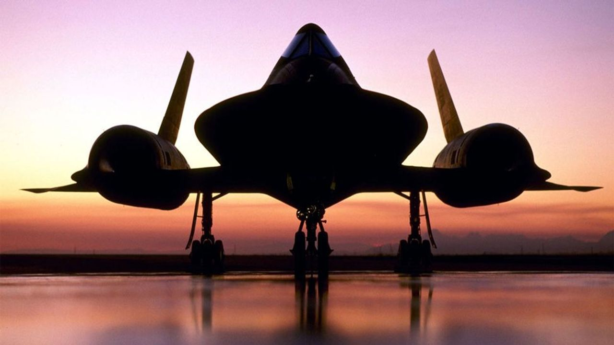

image background
The Basics
The Lockheed SR-71 "Blackbird" is a retired long-range, high-altitude, Mach 3+ strategic reconnaissance aircraft developed and manufactured by the American aerospace company Lockheed Corporation.[N 1] The SR-71 has several nicknames, including "Blackbird" and "Habu".[1]
The SR-71 was developed as a black project from the Lockheed A-12 reconnaissance aircraft during the 1960s by Lockheed's Skunk Works division. American aerospace engineer Clarence "Kelly" Johnson was responsible for many of the aircraft's innovative concepts.[2] The shape of the SR-71 was based on that of the Lockheed A-12, which was one of the first aircraft to be designed with a reduced radar cross-section in mind. Initially, a bomber variant of the A-12 was requested by Curtis LeMay, before the program was focused solely on reconnaissance. The SR-71 was longer and heavier than the A-12, allowing it to hold more fuel as well as a two-seat cockpit. The SR-71's existence was revealed to the public in July 1964; it entered service in the United States Air Force (USAF) in January 1966.[3] In 1989, the USAF retired the SR-71, largely for political reasons;[4] several were briefly reactivated during the 1990s before their second retirement in 1998. NASA was the final operator of the Blackbird, using it as a research platform; it was retired again in 1999.[5]
Mission equipment for the plane's aerial reconnaissance role included signals intelligence sensors, side looking airborne radar, and a camera.[6] During missions, the SR-71 operated at high speeds and altitudes (Mach 3.2 and 85,000 ft; 26,000 m), allowing it to outrace or entirely avoid threats.[6] If a surface-to-air missile launch was detected, the standard evasive action was simply to accelerate and outpace the missile.[7] On average, each SR-71 could fly once per week due to the extended turnaround required after mission recovery. A total of 32 aircraft were built; 12 were lost in accidents with none lost to enemy action.[8][9]
Since its retirement, the SR-71's role has been taken up by a combination of reconnaissance satellites and unmanned aerial vehicles (UAVs); a proposed UAV successor, the SR-72, is under development by Lockheed Martin, and scheduled to fly in 2025.[10] As of 2024, the SR-71 still holds the world record, which it set in 1976, as the fastest air-breathing manned aircraft, previously held by the closely related Lockheed YF-12.[11][12][13]